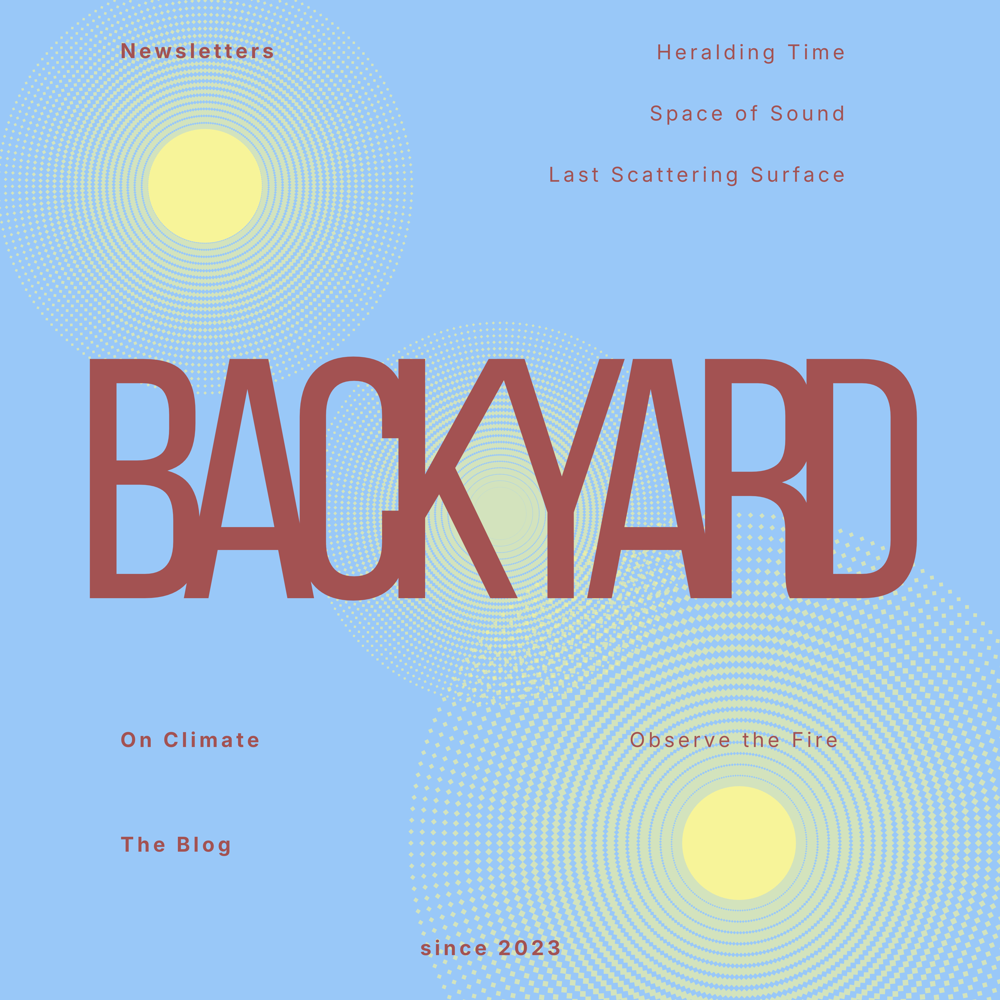

Essays on the history and philosophy of science, critical thought, and culture.
Dispatches from Heralding Time
Explorations in natural philosophy, epistemology, and the birth of modern scientific thought.